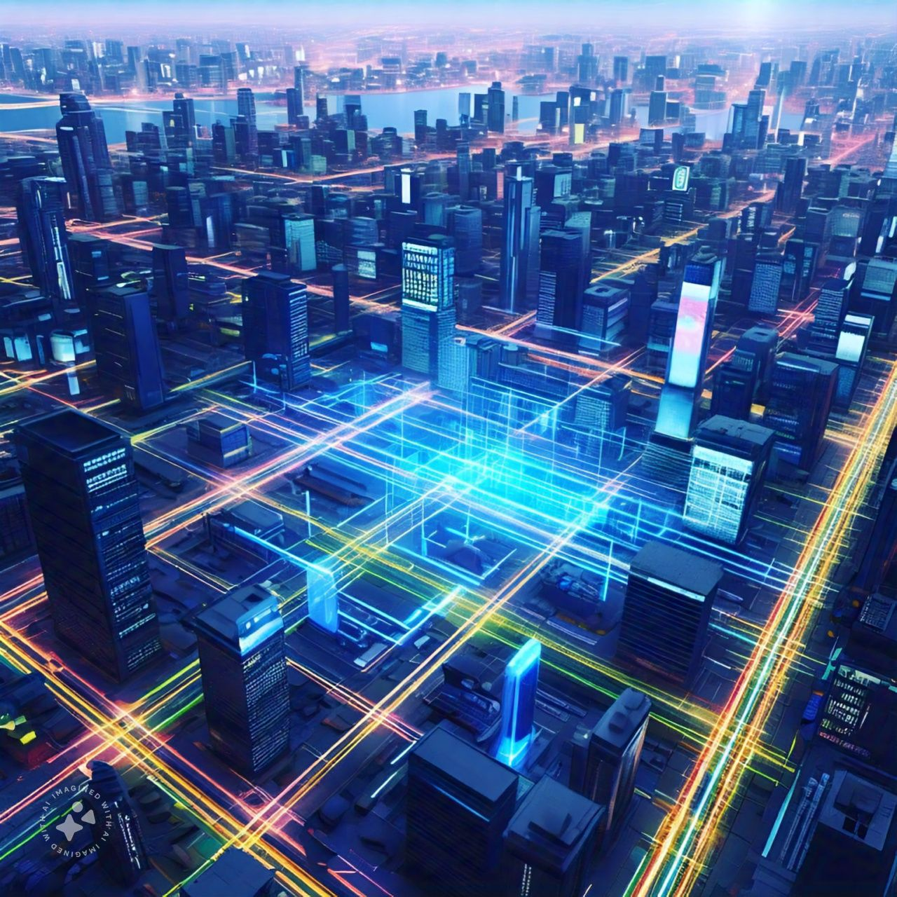

The Internet of Things (IoT) in 2024: Transforming the Connected World
The Internet of Things (IoT) continues to expand, connecting billions of devices and enabling seamless communication. In 2024, IoT is driving efficiency, innovation, and smarter decision-making across industries.
Key Trends in IoT
- Smart Cities: IoT-enabled solutions for traffic management, waste disposal, and energy optimization.
- Healthcare: Wearable devices and remote patient monitoring systems.
- Industrial IoT (IIoT): Improving manufacturing processes and predictive maintenance.
- Cybersecurity Focus: Enhancing data security in connected ecosystems.
Programming Example: IoT Device Integration
# Python example of controlling a smart light bulb
from phue import Bridge
bridge_ip = "192.168.1.2"
bridge = Bridge(bridge_ip)
# Connect to the bridge
bridge.connect()
# Turn on the light
light_name = "Living Room Light"
bridge.set_light(light_name, 'on', True)
print(f"{light_name} is now ON!")
Benefits and Challenges
IoT enhances efficiency and innovation but faces challenges such as data security, interoperability, and network reliability.
Further Reading
Explore these resources for more insights into IoT: